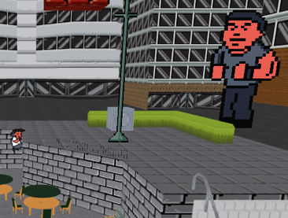

Gladius
An open web game engine
Gladius is a Javascript engine for making games on the web. It's an open source, community-based project with 3D rendering, physics... blah. Currently in alpha.
Learn moreGladius is a Javascript engine for making games on the web. It's an open source, community-based project with 3D rendering, physics... blah. Currently in alpha.
Learn more